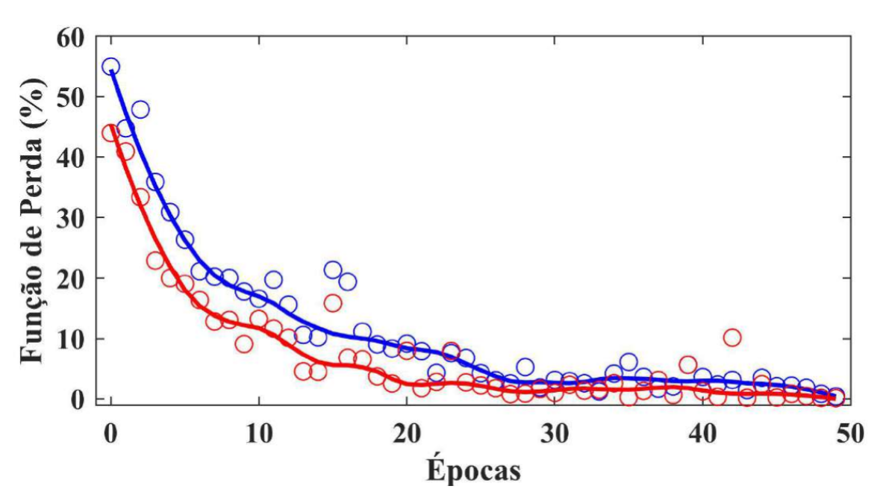
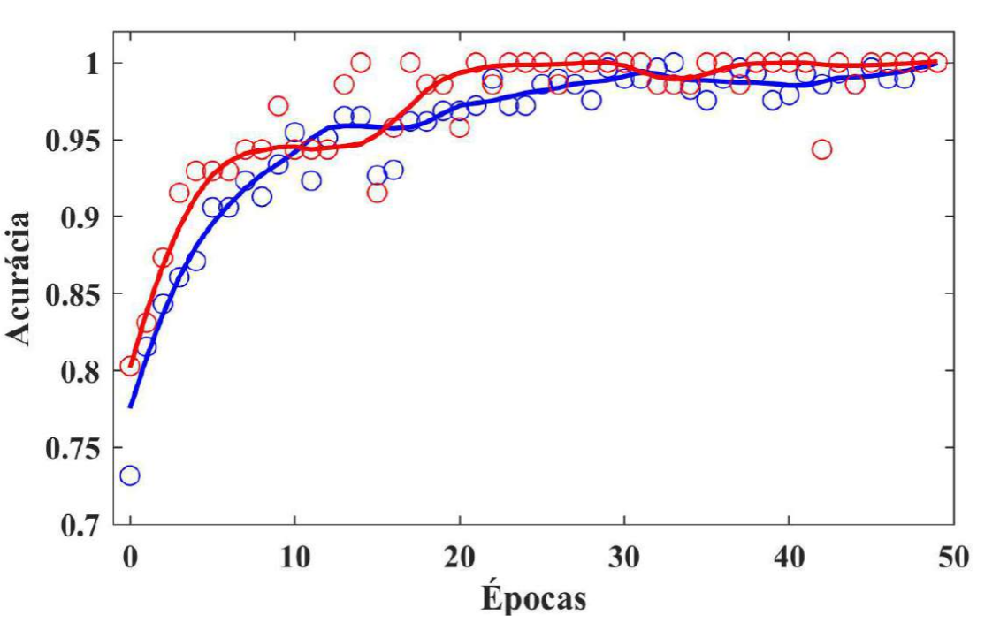

Monitoramento Inteligente da Dressagem de Rebolos
Com Emissão Acústica (EA), STFT e CNN
Orientador: Dr. Wenderson Nascimento Lopes
Discente: Ronald José Contijo
Curso: Engenharia de Controle e Automação - IFPR
Apresentação: 21/08/2025, 16:20
Projeto de TCC I
1. Tema
- Classificação do estado do rebolo (undressed/dressed) durante a dressagem
- Processamento de sinais de Emissão Acústica via análise tempo-frequência (STFT)
- Aplicação de Redes Neurais Convolucionais (CNN) para classificação automática
- Apoio à decisão do operador baseado em dados científicos
2. Problema e Justificativa
Problema
- Momento ideal para interromper a dressagem depende da experiência do operador
- Dependência subjetiva gera inconsistências e aumento de custos
- Decisões inadequadas: dressagem precoce ou prolongada
- Impacto direto na qualidade da retificação
Justificativa
- Aplicação dos princípios de Taylor (1911) para padronização
- Substituição de métodos empíricos por dados científicos
- Crescente demanda por soluções automatizadas na indústria
- Redução de custos e melhoria da qualidade
3. Objetivos
Objetivo Geral
Desenvolver metodologia baseada em IA para classificar o estado de rebolos convencionais durante dressagem, auxiliar operador na decisão "dressed" vs "undressed"
Objetivos Específicos
- Realizar ensaios de dressagem e coletar sinais de EA
- Gerar espectrogramas via STFT com parâmetros otimizados
- Treinar/validar CNN com imagens RGB dos espectrogramas
- Avaliar acurácia e função de perda BCE
4. Fundamentação Teórica - Dressagem
Definição: A dressagem é uma operação fundamental que recondiciona a superfície ativa do rebolo, restaurando sua geometria e afiando os grãos abrasivos.
- Parâmetros principais:
- Largura de atuação do dressador (bd)
- Passo de dressagem (Sd)
- Tempo de dressagem (td)
- Grau de recobrimento (Ud)
- Equipamento: Dressador diamante de ponta única (CVD)
- Retificadora: RAPH 1055 da Sulmecânica
- Rebolos: Óxido de alumínio (NORTON)
4. Fundamentação Teórica - Emissão Acústica
Mecanismo
- Vibrações mecânicas do contato dressador-rebolo geram sinais informativos
- Conversão em sinais elétricos via sensores piezoelétricos
- Coleta a 2MHz usando osciloscópio DL850 da Yokogawa
Aplicação
- Análise de sinais permite monitorar o estado do rebolo
- Características distintas para diferentes condições
- Base para classificação automática
Descobertas experimentais:
- Undressed: Níveis irregulares de amplitude
- Dressed: Níveis uniformes de amplitude
4. Fundamentação - STFT (Análise Visual)
A STFT analisa sinais não estacionários onde amplitude, frequência e fase variam no tempo
Sinal Original
Espectrograma STFT
5 tipos de sinais diferentes são gerados aleatoriamente: Chirp | Pulsos | Multifrequência | Modulação AM | Burst
4. Fundamentação - Redes Neurais Artificiais
RNA e Deep Learning
- RNA: modelo inspirado no cérebro humano
- Deep Learning: 3+ camadas de neurônios
- Capacidade de aprender representações hierárquicas
- Treinamento por backpropagation
CNNs
- Especializadas em processamento de imagens
- Convolução: extrai características locais
- Pooling: reduz dimensionalidade
- Ideal para classificação de espectrogramas
Vantagens das CNNs: Capturam relações complexas entre diferentes partes das imagens, ideais para padrões tempo-frequência
4. Fundamentação - Elementos Constituintes do Algoritmo
| Elemento | Descrição |
|---|---|
| Função de Ativação | ReLU (Rectified Linear Unit): Introduz não-linearidade, eficiente computacionalmente, evita vanishing gradient. |
| Função de Perda | Binary Cross Entropy (BCE): Mede a diferença entre previsões e rótulos binários, ideal para classificação binária. |
| Otimizador | Adam: Combina momento adaptativo e taxa de aprendizado ajustável, converge mais rápido e estável. |
| Pooling | Max Pooling: Reduz dimensionalidade mantendo características importantes, evita overfitting. |
| Camadas Convolucionais | Extraem características locais das imagens, como bordas e padrões nos espectrogramas. |
4. Fundamentação - Arquitetura de Rede Neural
Processamento: Entrada → Camadas Ocultas (extração de características) → Saída (classificação)
4. Fundamentação - Operação de Convolução
Imagem de Entrada (5×5)
Filtro 3×3
Feature Map (3×3)
Convolução: Aplica um filtro que desliza sobre a imagem, extraindo características como bordas, texturas e padrões
4. Fundamentação - Operação de Pooling
Feature Map (4×4)
Janela deslizante
Seleciona o valor máximo
Resultado (2×2)
Pooling: Reduz dimensionalidade mantendo características importantes, evita overfitting
4. Fundamentação - Função de Ativação ReLU
Características
- Não linear
- Computacionalmente eficiente
- Evita vanishing gradient
Aplicação
- Introduz não-linearidade
- Zero para valores negativos
- Linear para valores positivos
4. Fundamentação - Gradiente Descendente (GD)

4. Fundamentação - Função de Perda BCE
Exemplo de Cálculo
Previsão correta (y=1, p=0.9): BCE = -log(0.9) ≈ 0.105
Previsão incorreta (y=0, p=0.8): BCE = -log(1-0.8) ≈ 1.609
4. Fundamentação - Conversão Imagem para Números
4. Fundamentação - Operação de Flattening
5. Metodologia - Materiais e Equipamentos
Rebolos
- Rebolo A: 38A.100.LVH (355,6×25,4×127 mm)
- Rebolo B: 38A.150.LVH (324×25,4×127 mm)
- Material: óxido de alumínio (NORTON)
Dressador
- Diamante de ponta única
- Fabricação: CVD
Equipamentos
- Retificadora: RAPH 1055 (Sulmecânica)
- Osciloscópio: DL850 (Yokogawa)
- Microscópio: USB DNT DigiMicro 2.0
- Freq. amostragem: 2 MHz
5. Metodologia - Processamento STFT
Configuração dos Parâmetros
- Janela: Hanning com 4096 pontos
- Sobreposição: 75% das janelas
- FFT: 8192 pontos para Transformada Discreta de Fourier
- Resolução temporal: ~2 milissegundos
- Resolução frequencial: 488 Hz
- Faixa de frequência: 0-500 kHz
Resultado: Espectrogramas com ~180×180×3 pixels (RGB) para entrada na CNN
5. Metodologia - Processo de Treinamento
Pré-processamento
- Extração dos dados do passe de dressagem dos sinais originais
- Geração de espectrogramas via STFT com parâmetros otimizados
- Normalização RGB das imagens para 180×180×3 pixels
- Rotulagem binária: "undressed" (0) vs "dressed" (1)
Treinamento e Validação
- Divisão de dados: treinamento, validação e teste
- Função de perda: Binary Cross Entropy (BCE)
- Otimizador: Adam (learning rate adaptativo)
- Métrica principal: acurácia
- Ferramentas: Python, TensorFlow/Keras, Jupyter Notebook
6. Resultados
Classificador
- Alta acurácia na classificação "undressed" vs "dressed"
- Redução da dependência da experiência do operador
- Sistema capaz de ser empacotado em software
- Execução feita com TensorFlow Lite, e exportação ONNX
6. Resultados - Função de Perda
6. Resultados - Acurácia
7. Considerações Finais
- Contribuição Científica: Proposta inovadora combinando processamento de sinais com inteligência artificial para otimizar operação crítica de dressagem
- Impacto Possível:
- Redução da dependência da experiência subjetiva do operador
- Contribuição para monitoramento de processos de manufatura
- Auxílio aos operadores industriais para uso eficiente dos rebolos
- Trabalhos Futuros:
- Treinar a rede com mais dados
- Comparação CNN vs LSTM com dados multivariados
- Integração com sistemas de controle de qualidade
Cronograma de Atividades
| Atividade | 1º Bim | 2º Bim | 3º Bim | 4º Bim | 5º Bim | 6º Bim |
|---|---|---|---|---|---|---|
| Revisão Bibliográfica | ■■■ | |||||
| Entrega do Projeto | ■■■ | |||||
| Estudo TensorFlow/Keras | ■■■ | |||||
| Implementação CNN | ■■■ | |||||
| Avaliação da Rede | ■■■ | |||||
| Entrega do TCC | ■■■ |
Referências Bibliográficas (1/2)
CHOLLET, François. Deep learning with Python. 2. ed. [S.l.]: Manning, 2021.
GARRIDO, Mario. The feedforward short-time Fourier transform. IEEE Transactions on Circuits and Systems II: Express Briefs, v. 63, n. 9, p. 868–872, 2016.
GONG, X. et al. Application of deep learning in defect detection. Journal of Physics: Conference Series, v. 1684, 012030, 2020.
INDOLIA, Sakshi et al. Conceptual understanding of convolutional neural network: a deep learning approach. Procedia Computer Science, v. 132, p. 679–688, 2018.
MARINESCU, Ioan D. et al. Handbook of machining with grinding wheels. 2. ed. Boca Raton: CRC Press, 2016.
MSSQLTIPS. Convolutional Neural Networks for Machine Learning. Disponível em: https://www.mssqltips.com/sqlservertip/11473/convolutional-neural-networks-for-machine-learning/.
Referências Bibliográficas (2/2)
RUBY, Usha; YENDAPALLI, Vamsidhar. Binary cross entropy with deep learning technique for image classification. International Journal of Advanced Trends in Computer Science and Engineering, v. 9, n. 10, 2020.
RUSSELL, Stuart J.; NORVIG, Peter. Artificial intelligence: a modern approach. 3. ed. Harlow: Pearson Education, 2016.
TAYLOR, Frederick Winslow. The principles of scientific management. New York: Harper & Brothers, 1911.
SHUKLA, Lavanya. Gradient Descent vs Adagrad vs Momentum in TensorFlow. Wandb Reports, 2021. Disponível em: https://wandb.ai/lavanyashukla/visualize-models/reports/Gradient-Descent-vs-Adagrad-vs-Momentum-in-TensorFlow--VmlldzoxOTg2MjM.